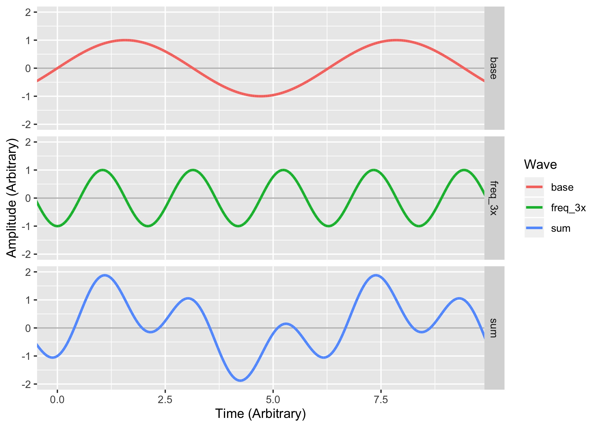
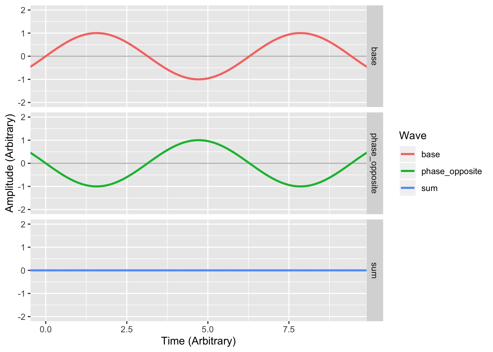

# An introduction to Sound ### Will Styler - CSS Bootcamp --- ### Today's Plan - What are the properties of sound? - How can we visualize them? - How do we think about amplitude? - What are complex sounds like? - What is 'phase'? - Why do Fourier analysis? --- ### Why do CSS people give a damn about sound? --- ### Sound is compression and rarefaction in a medium <img class="r-stretch" src="phonmedia/sound_diagram.jpg"> --- ### ... but we need to talk about it more concretely! --- ### The Key Properties of Sound - Duration - How long does it last? - Amplitude - How powerful is it? - Frequency - How often does it cycle? - Period - How long does a single cycle take? --- ### Key Properties Continued - Wavelength - How far can the wave travel in a single cycle? - What is the physical distance between peaks? - Phase - That's next time! --- ### Duration - We talk about sounds in Milliseconds - 1 second (s) = 1000 milliseconds (ms) - Half a second (0.5 s) = 500 milliseconds (ms) - One Quarter second (0.25 s) = 250 ms - 1 meter = 1000 millimeters - Duration is kind of boring for this class - ... but very important for language and survival --- <img class="r-stretch" src="phonmedia/200Hz.jpg"> --- ### Amplitude - What is the difference in pressure between compressions and rarefactions? - We talk about Amplitude in Decibels - We'll get there soon! --- <img class="r-stretch" src="phonmedia/200Hz.jpg"> --- <img class="r-stretch" src="phonmedia/200HzHigherAmplitude.jpg"> --- ### Amplitude is related to loudness - Loudness is the *perceptual correlate* of amplitude - Generally, when amplitude goes up, so does perceived loudness - **It's super complicated!** - More on this later --- ### Conceptualizing Amplitude - Why is dropping a small book quieter than dropping a large one? - How does a car muffler work? - Why can high amplitude sound be damaging and shatter windows? --- <img class="r-stretch" src="hearing/muffler.jpg"> --- ### Period - How long does a single cycle last? --- <img class="r-stretch" src="phonmedia/200Hz.jpg"> --- <img class="r-stretch" src="phonmedia/200Hz.jpg"> - Here, 0.005 seconds (5 ms) <audio controls src="phonmedia/200Hz.wav"></audio> --- <img class="r-stretch" src="phonmedia/400Hz.jpg"> --- <img class="r-stretch" src="phonmedia/400Hz.jpg"> - Here, 0.0025 seconds (2.5ms) <audio controls src="phonmedia/400Hz.wav"></audio> --- ### Frequency - "How many times does the sound cycle in one second?" - Measured in 'Hertz' (Hz), also known as 'Cycles per second' - 'How many periods can fit in one second?' --- # f = 1/t - f = Frequency in Hz - t = Period in Seconds --- <img class="r-stretch" src="phonmedia/200Hz.jpg"> --- <img class="r-stretch" src="phonmedia/200Hz.jpg"> - Period = 0.005 seconds - Frequency = 1/0.005 = **200 Hz** --- <img class="r-stretch" src="phonmedia/400Hz.jpg"> - Period = 0.0025 seconds - Frequency = 1/0.0025 = **400 Hz** --- <img class="r-stretch" src="phonmedia/400Hz.jpg"> - Period = 0.0025 seconds - Frequency = 1/0.0025 = **400 Hz** --- ### Greater period = Lower Frequency! - Longer cycles == Fewer Cycles per Second --- ### Frequency is related to pitch - Pitch is the perceptual correlate of frequency - Generally, when frequency goes up, so does perceived pitch - It's complicated! - More on this later! --- ### Wavelength - "How far does the wave travel during a single cycle?" --- ### Calculating Wavelength requires two pieces of information... - How fast is it moving? - At the speed of sound! (343 meters per second) - How often per second does it cycle? - That's the frequency! --- ### It makes sense that frequency is involved <img class="r-stretch" src="phonmedia/wavelength.jpg"> --- ### Wavelength is... - Meters per second / Cycles per second - You then get meters per cycle! --- # λ = c/f - λ = Wavelength in Meters - c = Speed of Sound in Air (343 m/s for this class) - f = Frequency in Hz --- <img class="r-stretch" src="phonmedia/200Hz.jpg"> - Period = 0.005 seconds - Frequency = 1/0.005 = **200 Hz** - Wavelength = 343/200 = **1.715 Meters** --- <img class="r-stretch" src="phonmedia/400Hz.jpg"> - Period = 0.0025 seconds - Frequency = 1/0.0025 = **400 Hz** - Wavelength = 343/400 = **0.857 Meters** --- ### Lower Frequencies have longer wavelengths <img class="r-stretch" src="phonmedia/wavelength.jpg"> --- ### Conceptualizing Wavelength - Why does a double-bass play lower notes than a violin? - Why do subwoofers need to be bigger? - Why do you hear your neighbors' bass, but not their treble? - There are also differences in reflection of low vs. high frequencies --- ### Period, Frequency, and Wavelength are all related - Frequency is calculated from period, wavelength from frequency --- ### Amplitude and Duration are not related to any other element! - Nor to each other! --- ### We can find these things out for any sound! <img class="r-stretch" src="phonmedia/100+200.jpg"> --- <img class="r-stretch" src="phonmedia/100+200.jpg"> - Amplitude ≈ 0.4 - Duration = ?? - Period = 0.01 seconds - Frequency = 1/0.01 = 100 Hz - Wavelength = 343/100 = 3.43 meters --- ### Interim Summary - All sounds have amplitude, duration, periods, frequencies, and wavelengths - Many of these things are related to one another - These properties have real consequences for how sound actually works! - Let's think about amplitude a bit more... --- # Amplitude --- ### Sound Amplitude is pressure  - Greater compression, greater amplitude --- ## Measuring Sound Pressure --- ## Where do we measure on the wave?  ---  ---  --- ### We use Root-Mean-Square Amplitude - Eliminates asymmetry between up and down - Takes the mean amplitude for the sound overall! - This captures the fact that sounds often vary in amplitude! --- ## How far away do I measure from? --- ### Distance matters!  - If the distance from the source is doubled, pressure is cut in half! --- ### There's a bit more to it than this! - Moving the medium damps sound independently of this - Lower frequencies are damped less in air, hence seeming to 'travel' farther - Vertical differences in air temperature can 'bend' sound up and down - When the air is warmer near the ground, sound bends upwards --- ### We know this to be true! - Distant sounds are quieter - You don't feel the pressure bursts from distant fireworks - There is a 'safe distance' from an explosion --- ### Amplitude measures without distances are meaningless  --- ### Amplitude measures without distances are meaningless - Anything's safe for hearing if you're far enough away - "Just grab their measurement device and walk 'til it's legal" - So, it's critical to give amplitudes with a distance - "20 Pascal at 1 meter" - "... measured at 90dB at 2 meters from the source" - "Less than 50dB at the property boundary" --- ## OK, so what units should we use? --- ### Let's start with a simple unit - **Pascal** - Newtons per square meter - Where a newton is the force required to move a kilogram 1 meter per second per second --- ### What's zero sound pressure? - Nothing really is - Quietest places on Earth (anechoic chambers) are ~1.9x10<sup>-6</sup> Pascal - The quietest 1kHz sound we can hear is 2.00×10<sup>−5</sup> Pascal - **We're humans, so we're choosing the human audibility threshold as 'zero'** --- ### What's the maximum pressure? - The Planck Pressure? - The highest possible force in the smallest possible area - 4.63309*10<sup>113</sup> Pascal - In Earth's atmosphere, the loudest possible waves are around 1.01x10<sup>5</sup> (101000) Pascal - Humans experience pain in the 200 Pascal Range - Humans experience long term hearing damage > 0.36 Pascal --- ### So our range as humans is... - 200 Pascal highest tolerable sound with pain - 63 Pascal for a trumpet half a meter away - 20 Pascal can cause instant hearing damage - 2 Pascal for a jackhammer a meter away - 0.36 Pascal causes hearing damage over long term exposure - 0.02 Pascal for a home TV a meter away - 0.002 for conversation - 0.00002 Pascal lowest detectable sound by humans ---  --- ## That's kind of awful - Most of the scale is used for 'too damned loud' - Any time you're using 0.00002, you're going to make mistakes --- ## Enter the Decibel! - Decibels are logarithmic - We'll use dB SPL (Sound Pressure Level) - We use a reference value of 0.00002 Pascal - The lowest audible amplitude --- ### dB SPL can be calculated from Pascal - dB = 20*log10(Pascal/0.00002) - log10 is NOT the same thing as log or ln! - This will mess up your homeworks!  --- ### So our range as humans is... - 140dB highest tolerable sound with pain - 130dB for a trumpet half a meter away - 120dB can cause hearing damage instantly - 100dB for a jackhammer a meter away - 85dB causes hearing damage over long term exposure - 60dB for a home TV a meter away - 20dB for conversation - 0dB lowest detectable sound by humans - -20dB Anechoic Chamber Quiet --- ### Yes, dB can be negative! - Remember, 0 is our threshold for hearing! - ... and we're not all that good at hearing quiet things --- ## Aside: Decibels and Damage --- ### High Amplitude sounds cause hearing damage! - 180+dB can break the TM and/or dislocate the ossicles - Sounds over 132dB can rip the organ of corti off the basilar membrane - Long term high amplitude sounds damage the stereocilia and can cause cell death --- ### What are the 'safe' levels? - [Let's Ask ASHA](https://www.asha.org/public/hearing/loud-noise-dangers/) - The American Speech Language Hearing Association --- ### What are 'safe' levels? - < 70 dB is *absolutely fine!* - 70-85 dB is fine *in short doses < 8 hours* - 85+ dB has the safe exposure time cut in half per 3 dB - So 91 dB is OK for only 2 hours - OSHA requires hearing protection for anything over 90 dB - Over 120dB is **not safe for any amount of time** - This is *instant damage!* --- ### Instant Damage Sounds - 140-190dB for a gunshot, firecracker, artillery, nearby fireworks - 150dB for Jet Engines and firecrackers and dynamite blasts - Over 130dB causes **immediate pain!** - 130dB for auto racing, jackhammers - Over 120dB can cause **instant hearing damage** - 110-120dB is thunder, stadia, chainsaws - Most rock concerts are 110-120dB! --- ### Gradually damaging sounds - 105+ dB for unmuffled motorcycles - 90-100dB is very possible with headphones and background noise - 80-90dB is common on busy streets and in subways - Restaurants can easily reach 90dB - 85dB can cause damage with long-term exposure - Blenders, Smoke Alarms, Hand Saws, and Machining tools can easily be in this range! --- ### Amplitude is complex - ... but luckily it doesn't matter too much, much of the time - It's important for you to know this, though! --- ### Let's think about more complex sounds <img class="r-stretch" src="phonmedia/100+200.jpg"> --- ### We've been looking at sine waves - Sounds which have just one *frequency component* - These are relatively rare in nature! - It's positively sineful that we've focused there - Most actual sources of sound generate multiple frequencies naturally --- ### ... and our ears (almost) never just hear one frequency - Because we're surrounded by noise! - Noise arriving at the ear is additive - We only hear one waveform per ear, no matter the source(s) --- ### So, we should probably talk about... --- ## Complex Sounds --- ### Complex Sounds - Sounds which are made up of more than one *component frequency* - Also, *aperiodic* sounds, which aren't naturally derived from specific frequencies --- ### We're going to work with simplified complex sounds today - But the world is full of more complex complexity <img class="r-stretch" src="phonmedia/noisewaveform.jpg"> --- ### How do we create complex sounds? - By making multiple sounds at the same time! - Or, mathematically, using addition! --- <img class="r-stretch" src="phonmedia/soundw.jpg"> <audio controls src="phonmedia/soundw.wav"></audio> --- <img class="r-stretch" src="phonmedia/soundt.jpg"> <audio controls src="phonmedia/soundt.wav"></audio> --- <img class="r-stretch" src="phonmedia/soundf.jpg"> <audio controls src="phonmedia/soundf.wav"></audio> --- <img class="r-stretch" src="phonmedia/soundwtf.jpg"> <audio controls src="phonmedia/soundwtf.wav"></audio> --- ### Let's look at this process in a bit more detail! <img class="r-stretch" src="diagrams/phase_2x_separate.jpg"> ---  --- ### You can add very different frequencies! <img class="r-stretch" src="diagrams/phase_12x_separate.jpg"> --- ### Why would sounds be combined together using addition? <img class="r-stretch" src="diagrams/phase_12x_separate.jpg"> --- ### The sum of two waves is the sum of their pressures at any given point - Which gives rise to... --- ## Interference --- ### Interference - Multiple signals are 'interfering' with one another when they collide and affect one another - *Affect* means just that! Any effect at all! - There are two main kinds of interference in audio - Constructive Interference - Destructive Interference --- ### Constructive Interference - When multiple waves combine in such a way that they become **stronger** - When peaks add together with peaks --- ### Destructive Interference - When multiple waves combine in such a way that they become **weaker** - When peaks add together with valleys --- ### Constructive Interference <img class="r-stretch" src="diagrams/phase_ampbase_separate.jpg"> --- ### Destructive Interference  --- ### ... but wait - Those sounds had the same frequency - The same amplitude - ... and the same duration - One pair combined constructively, and the other pair destructively - ### What's the difference? --- ## Phase --- ### Phase - The point of the cycle in which a sound 'starts' - The 'orientation' of the wave in time - We measure phase in Degrees (°) - 0° is the base, and is the same as 360° - 180° is the exact opposite phase from 0° --- <img class="r-stretch" src="diagrams/phase_phases_separate.jpg"> --- ### Phase is important for adding sounds together! - Sounds that are 'in phase' experience constructive interference - Sounds that are 'out of phase' experience destructive interference - Also called 'phase cancellation' here --- ### Constructive Interference <img class="r-stretch" src="diagrams/phase_ampbase_separate.jpg"> --- ### Destructive Interference/Phase Cancellation --- ### Complete cancellation is relatively rare! <img class="r-stretch" src="diagrams/phase_amplified_separate.jpg"> --- ### Phase effects aren't all-or-nothing <img class="r-stretch" src="diagrams/phase_offbad_separate.jpg"> --- <img class="r-stretch" src="diagrams/phase_off_separate.jpg"> --- ### Aside: Applied Phase Cancellation <img class="r-stretch" src="img/noise_cancelling_headphones.jpg"> --- <img class="r-stretch" src="hearing/muffler.jpg"> --- ### Humans can't detect phase - It doesn't matter what phase a sound starts on to us - But it's crucial when making complex sounds! - And phase is one of those concepts that shows up *over and over* --- ### Subtle Phase differences matter! --- --- <img class="r-stretch" src="diagrams/phase_3x_separate.jpg"> --- # Complex Sounds are everywhere! --- <img class="r-stretch" src="phonmedia/noisewaveform.jpg"> --- ### How do we understand their components? - Using spectra or spectrograms - Using a **Fourier Transform** lets us understand the component frequencies and their phases - 'This signal is made up of which component signals?' --- ### Here's a nice video on Fourier Transforms <https://www.youtube.com/watch?v=spUNpyF58BY> "But what is the Fourier Transform? A visual introduction" by 3Blue1Brown --- ### We've been looking at waveforms! <img class="r-stretch" src="phonmedia/sound_diagram.jpg"> - They show the combined, complex signal! --- <img class="r-stretch" src="phonmedia/soundw.jpg"> <audio controls src="phonmedia/soundw.wav"></audio> --- <img class="r-stretch" src="phonmedia/soundt.jpg"> <audio controls src="phonmedia/soundt.wav"></audio> --- <img class="r-stretch" src="phonmedia/soundf.jpg"> <audio controls src="phonmedia/soundf.wav"></audio> --- <img class="r-stretch" src="phonmedia/soundwtf.jpg"> <audio controls src="phonmedia/soundwtf.wav"></audio> --- ### Spectra show frequencies and their powers - Also known as 'FFTs' or 'Spectral Slices' --- <img class="r-stretch" src="phonmedia/soundwtf.jpg"> --- <img class="r-stretch" src="phonmedia/soundwtf_spectrum.jpg"> --- ### FFTs give us the component frequencies - ... and their power - Phase is also recoverable using FFTs - ... but we want time! --- ### Spectrograms show frequency and power over time! <img class="r-stretch" src="phonmedia/soundwtf.jpg"> --- <img class="r-stretch" src="phonmedia/soundwtf_spectrogram.jpg"> --- ### Fourier analysis works for any complex sound! <img class="r-stretch" src="phonmedia/complexwave1.jpg"> --- <img class="r-stretch" src="phonmedia/complexwave2.jpg"> --- <img class="r-stretch" src="phonmedia/complexwave3.jpg"> --- <img src="phonmedia/complexwaves.jpg"> --- ### Our cochleas are doing something like fourier analysis! <img class="r-stretch" src="phonmedia/complexwave2.jpg"> --- <img class="r-stretch" src="hearing/basilar_frequencies.jpg"> --- <img class="r-stretch" src="phonmedia/noisewaveform.jpg"> --- <img class="r-stretch" src="phonmedia/noisefft.jpg"> --- ### Now let's look at some other sounds!